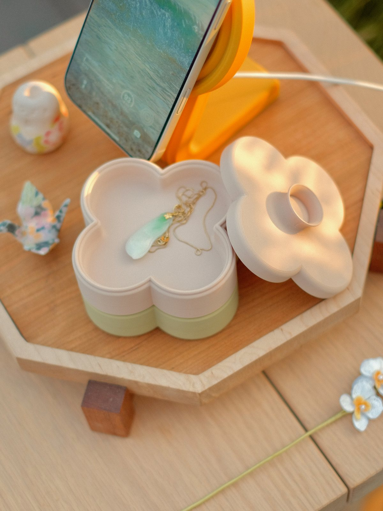
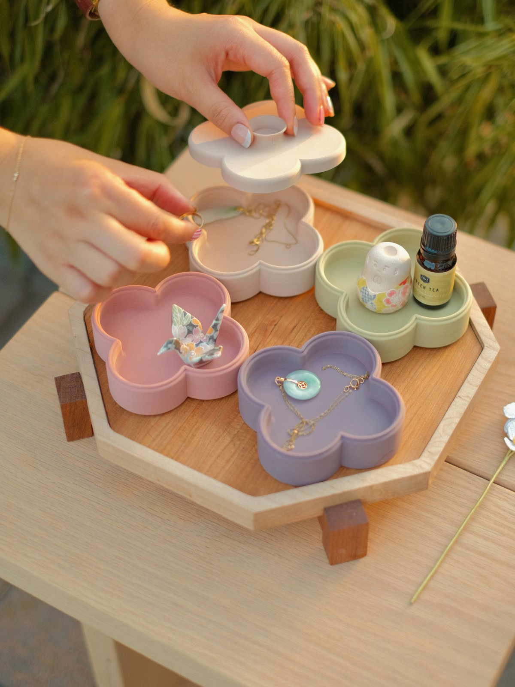
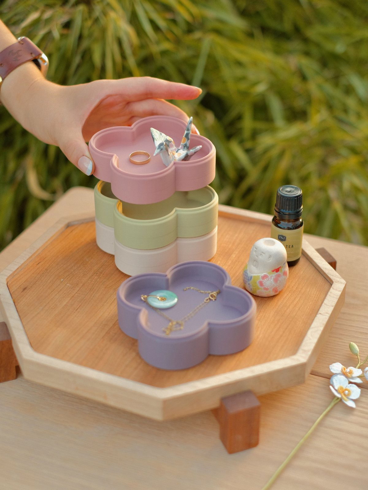
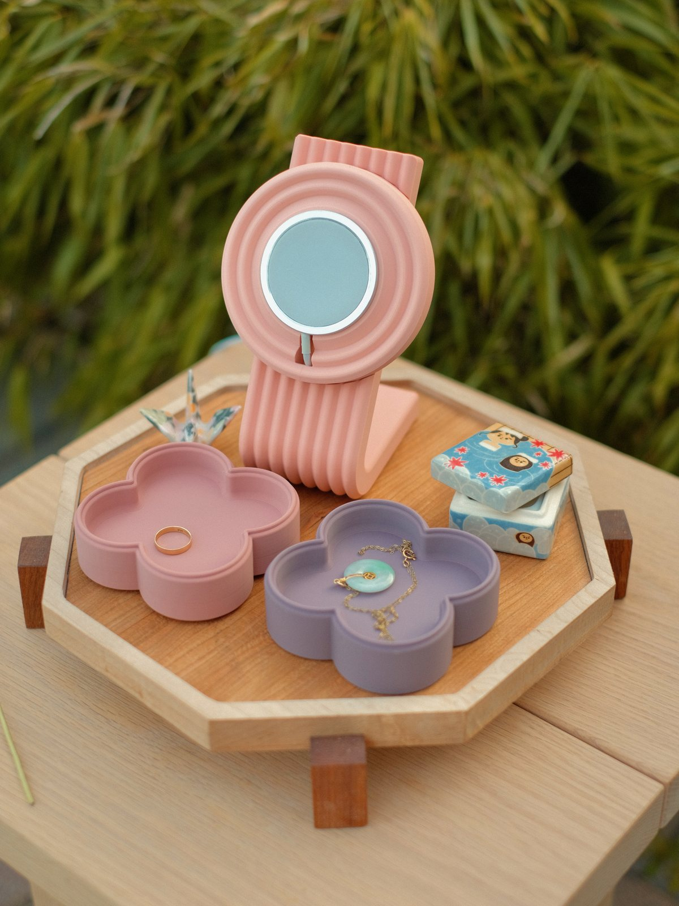

Fa Trinket Tray
A stacking tray inspired by a 500-year-old Korean tradition.
- Year
- 2026
- My part
- Idea, form, colors
- Made with
- Tristan and Ashleigh, in our studio.
“A tray is never just a container. It’s a stage.”
From my video on designing it, 2026.

The flower shape, and how the layers came about.

Four petals, a lid with a ring to lift it by.


Each layer sits on the next, so one tray can become three.

Rings, earbuds, the small things that used to live loose on my desk.
See it at Cozyleigh Studios